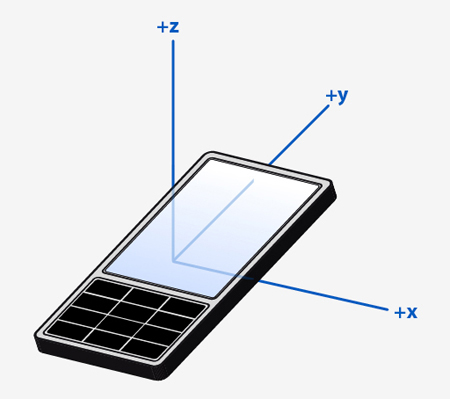

Qt Sensors C++ Overview
Sensor Types
On a device there can be many types of sensors. Not all of the types that the Qt Sensors API supports may be available. There may also be types available that are not defined in the Qt Sensors API. The types of sensors available on a device is found using the QSensor::sensorTypes() function.
For a list of built-in sensor types, see the Sensor Classes section below.
Common Conventions
Unless specified otherwise, Qt Sensors uses the Right Hand Cartesian coordinate system.

To allow for measurements in all 6 directions, negative values are used.

Where rotation around an axis is used, the rotation shall be expressed as a Right Hand rotation.

In general, sensor data is oriented relative to QScreen::nativeOrientation, that is to the top of the device when the device is held in its natural orientation (normally when the device logo appears the right side up). If values are to be displayed on the screen, the values may need to be transformed so that they match the user interface orientation. A sensor may define its data as being oriented to the UI. This will be noted in the documentation for the sensor.

Using a Sensor
The life cycle of a QSensor is typically:
- Create an instance of QSensor or one of its sub-classes on the stack or heap.
- Setup as required by the application.
- Start receiving values.
- Sensor data is used by the application.
- Stop receiving values.
Here is an example of creating a sensor on the heap and on the stack.
// On the heap (deleted when this object is deleted) QAccelerometer *sensor = new QAccelerometer(this); // On the stack (deleted when the current scope ends) QOrientationSensor orient_sensor;
Accessing Sensor Data in a Generic Fashion
The preferred way to deal with sensor data is via the Reading Classes. However, sometimes this may not be possible. For example, you may be deploying an application to a device that has a new sensor type but no C++ header describing the reading class is available.
Thanks to Qt's property system you can still access the sensor data. You need to know 3 pieces of information in order to do this:
- The sensor type.
- The property name or index.
- The property type or a comparable type.
For example, here is an example of how you can access a property of the accelerometer. This code does not require any compile-time links to QAccelerometer or QAccelerometerReading.
// start the sensor QSensor sensor("QAccelerometer"); sensor.start(); // later QSensorReading *reading = sensor.reading(); qreal x = reading->property("x").value<qreal>(); qreal y = reading->value(1).value<qreal>();
You can discover all of this information at runtime too.
Discovering Sensors And Reading Properties At Runtime
Sometimes it may be that the available sensors are not known at development time. It is possible to find out which sensors are available as illustrated below:
QList<QSensor*> mySensorList; for (const QByteArray &type : QSensor::sensorTypes()) { qDebug() << "Found a sensor type:" << type; for (const QByteArray &identifier : QSensor::sensorsForType(type)) { qDebug() << " " << "Found a sensor of that type:" << identifier; QSensor* sensor = new QSensor(type, this); sensor->setIdentifier(identifier); mySensorList.append(sensor); } }
Furthermore it is possible to discover the reading details for these sensors, as illustrated below:
for (QSensor* sensor : mySensorList) { const int firstProperty = QSensorReading::staticMetaObject.propertyOffset(); // Connect to backend first in case start() hasn't been called yet if (!sensor->connectToBackend()) continue; qDebug() << "Sensor" << sensor->identifier() << "reading properties:"; QSensorReading *reading = sensor->reading(); if (reading) { const QMetaObject *mo = reading->metaObject(); for (int i = firstProperty; i < mo->propertyCount(); ++i) { QByteArray name = mo->property(i).name(); qDebug() << " " << name << reading->property(name).toByteArray(); } } }
Front End, Back End
The Qt Sensors API has a front end, for application developers to use and a back end, where device implementors write code to access their hardware. As an application developer you do not need to access the back end though it may be useful to understand how it works.
Commands from the application are delivered through QSensor and then down to the device plugin. Data comes back through the QSensorReading class.

More information about the back end can be found in Qt Sensors Backend.
Main Classes
The primary classes that make up the Qt Sensors API.
Represents a single hardware sensor | |
Efficient callback facility for asynchronous notifications of sensor changes | |
Holds the readings from the sensor |
Reading Classes
The best way to access sensor data is via one of these classes.
Reports on linear acceleration along the X, Y and Z axes | |
Represents one reading from the ambient light sensor | |
Holds readings of the ambient temperature | |
Represents one reading from a compass | |
Represents one reading from the gyroscope sensor | |
Holds readings from the humidity sensor | |
Represents one reading from the light sensor | |
Represents one reading from the magnetometer | |
Represents one reading from the orientation sensor | |
Holds readings from the pressure sensor | |
Represents one reading from the proximity sensor | |
Represents one reading from the rotation sensor | |
Holds readings from the tilt sensor |
Sensor Classes
These classes provide convenience wrappers that reduce the need for casting. Each of these classes represents a sensor type that the Qt Sensors API knows about. Note that additional types may be made available at run-time. See Sensor Types for more information.
Convenience wrapper around QSensor | |
Convenience wrapper around QSensor | |
Convenience wrapper around QSensor | |
Convenience wrapper around QSensor | |
Convenience wrapper around QSensor | |
Convenience wrapper around QSensor | |
Convenience wrapper around QSensor | |
Convenience wrapper around QSensor | |
Convenience wrapper around QSensor | |
Convenience wrapper around QSensor | |
Convenience wrapper around QSensor | |
Convenience wrapper around QSensor | |
Convenience wrapper around QSensor |
Filter Classes
As with the sensor classes, these provide convenience wrappers that reduce the need for casting.
Convenience wrapper around QSensorFilter | |
Convenience wrapper around QSensorFilter | |
Convenience wrapper around QSensorFilter | |
Convenience wrapper around QSensorFilter | |
Convenience wrapper around QSensorFilter | |
Convenience wrapper around QSensorFilter | |
Convenience wrapper around QSensorFilter | |
Convenience wrapper around QSensorFilter | |
Convenience wrapper around QSensorFilter | |
Convenience wrapper around QSensorFilter | |
Convenience wrapper around QSensorFilter | |
Convenience wrapper around QSensorFilter | |
Convenience wrapper around QSensorFilter |